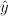
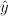

are determined by least squares estimation.
are determined by least squares estimation.
This utility performs computations that determine the linear regression between multiple variables. To use this utility, you must provide the values for at least one independent/predictor variables and a dependent/response in separate columns.
The multiple regression equation is
where is the independent variable with n
sample values and are the dependent variables, each
of which also has n sample values. The regression coefficients
are determined by least squares estimation.
For variation, the following values are computed (
 is the mean of the y variable values,
 is the y value predicted by the regression
equation):
is the mean of the y variable values,
 is the y value predicted by the regression
equation):


Select an independent variable under the Select the column containing an independent variable list. Click the Add to list button to add the column to the list of independent variables. To remove a variable from the list, select the variable name and click the Remove from list button. Ctrl-click or shift-click to select multiple columns. Click the Clear Input List button to clear the input list.
Select the dependent variable under the Select the column containing the dependent variable drop-down menu.
Click OK to perform the computation. The results will be displayed in the log window.